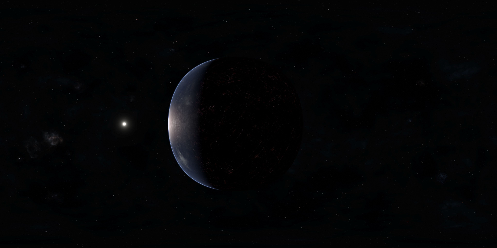
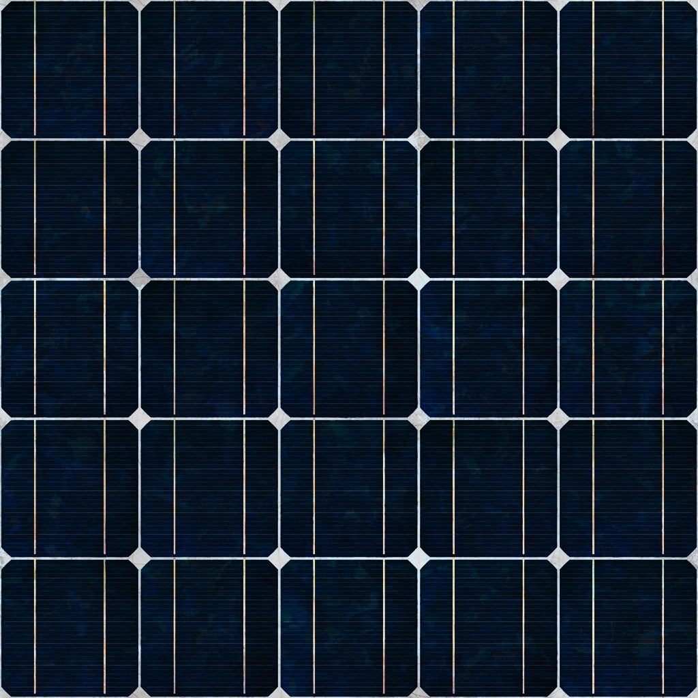

Zero Trust CenterUse the navigation arrows or keyboard to explore!Use the mouse or touchscreen to look around and answer quiz questions.Panel 0Zero Trust Architecture Starts HerePanel 1What is zero trust architecture?Zero Trust Architecture is a modern cybersecurity strategy, summed up by the phrase never trust, always verify. Reference 1.Zero trust architecture has nothing to do with building physical buildings. It is not about creating a secret fortress or underground bunker. It is a strategy for building secure technology that everyone can benefit from, employees, companies, anybody with an online account. The only people who do not benefit are hackers and people who would like to misuse their digital privileges.Panel 2Why is zero trust architecture important?The old way of doing cybersecurity is no longer enough. Imagine that you are trying to build a castle with top-notch security.At first, everything goes well. You have a moat, a drawbridge, and guards in the watchtowers. Only people with valid IDs are let in, and everyone new has to prove themselves. However, there are two major flaws with the old way of doing things. First, any person with an ID is let in, even if they stole that ID. Second, they are not watched or restricted inside the castle. If a person's job is to deliver food, they should not be able to start messing around in the swordsmith's shop. Zero trust architecture aims to address this.Panel 3Zero Trust Architecture EffectivenessAs shown in Figure 3, zero trust architecture is an effective way to improve security.While it may have high initial costs and increase the overall security budget, it can easily pay for itself in terms of reduced damage. The average cost of a data breach in 2024 was $4.9 million. Reference 4. Saving $4.9 million is worth it. ZTA could even be a business booster for small and medium enterprises (SMEs). Reference 5. Consumer confidence means consumer dollars.Panel 4Zero Trust Architecture FundamentalsPanel 5Zero Trust Architecture and DataKeeping sensitive information confidential is important.One of the best ways to do this is to specify what information each person is allowed to access. Data should be classified and protected accordingly, preferably with the help of AI. Reference 5. People should only have access to the information they need, and their access should be regularly reevaluated to prevent privilege creep (that is, accumulating unnecessary privileges over time). Reference 6.Panel 6Zero Trust Architecture and IdentityZero trust architecture has a lot to do with making sure a cybercriminal cannot just hop on an account, pretend to be someone, and take it for a joy ride.Passwords are too easy to steal. Ideally, multifactor authentication (MFA), an organization-wide single sign-on (SSO) system, and machine learning (ML) should be used to strengthen Identity and Access Management. Reference 6. Users should be automatically signed out after a certain amount of time. Reference 6. Also, users should only be able to access certain resources for an amount of time before they have to get permission again. Reference 6. Identity and Access Management is not all there is to zero trust architecture, but it plays an important role.Panel 7Zero Trust Architecture and NetworksNetworks (systems connecting computers) should be just as regulated as everything else.They should be segmented into many separate networks to reduce the freedom of cybercriminals, who would very much like to gain access to an entire organization network all at once, not just a small segment. Reference 8. Network communications should always be encrypted and filtered. Reference 6.Panel 8Zero Trust Architecture and User Devices and AppsFinally, zero trust architecture makes sure that devices connecting to a company network are secure.This means controlling which apps employees can and cannot install on their assigned devices (to avoid malware). Reference 9. This also means software that the IT team can use to remotely monitor every assigned device, ideally software that uses machine learning to detect unusual activity. Reference 6. If a device is not authorized and monitored, it should not be allowed to connect to the normal network. Reference 6. Such devices should connect to a completely separate network. Reference 6.Panel 9Challege QuestionsPanel 10Quetion Number 1Panel 11Question Number 2Panel 12Question Number 3Panel 13ReferencesPanel 14Reference 1. "Stock Images," Microsoft. [Online]. Available: https://cdn.hubblecontent.osi.office.net/m365content/ux/m365contentpicker/index.html. [Accessed March 21, 2025].Reference 2. S. Ahmadi, "Zero Trust Architecture in Cloud Networks: Application, Challenges and Future Opportunities," Journal of Engineering Research and Reports, volume 26, number 2, pages 215 through 228, February 13, 2024. [Online]. Available: https://journaljerr.com/index.php/JERR/article/view/1083. [Accessed February 27, 2025].Reference 3. Clker-Free-Vector-Images, "Download Sign, Caution, Warning. Royalty-Free Vector Graphic - Pixabay," Pixabay. [Online]. Available: https://pixabay.com/vectors/sign-caution-warning-danger-safety-304093/. [Accessed March 1, 2025].Reference 4. "Cost of a Data Breach Report 2024," International Business Machines. July 2024. [Online]. Available: https://www.ibm.com/reports/data-breach. [Accessed March 11, 2025].Reference 5. K. Lake, "The Benefits of Zero Trust Security to Small and Medium Enterprises," Jumpcloud. February 22, 2022. [Online]. Available: https://jumpcloud.com/blog/zero-trust-benefits-smes. [Accessed March 12, 2025].Reference 6. M. Qureshi, "Zero Trust Architecture - Myth or Reality?" Information Systems Audit and Control Association. November 4, 2020. [Online]. Available: https://www.isaca.org/resources/isaca-journal/issues/2020/volume-6/zero-trust-architecture-myth-or-reality. [Accessed March 11, 2025].Reference 7. A. Trevino and A. Cutler, Editor, "What Is Privilege Creep?" Keeper Security. March 12, 2024. [Online]. Available: https://www.keepersecurity.com/blog/2024/03/12/what-is-privilege-creep/. [Accessed March 4, 2025].Reference 8. "Zero Trust security | What is a Zero Trust network?" Cloudflare. [Online]. Available: https://www.cloudflare.com/learning/security/glossary/what-is-zero-trust/. [Accessed March 20, 2025].Reference 9. "Zero Trust Strategy & Architecture | Microsoft Security," Microsoft. [Online]. Available: https://www.microsoft.com/en-us/security/business/zero-trust. [Accessed March 20, 2025].Reference 10. K. Ako-Adjei, K. Vice, and J. Mathew, et al. "Password policy recommendations for Microsoft 365 passwords," Microsoft. May 28, 2024. [Online]. Available: https://learn.microsoft.com/en-us/microsoft-365/admin/misc/password-policy-recommendations. [Accessed March 21, 2025].Reference 11. Clker-Free-Vector-Images, "Download Checkered Flag, Finish Line, Grand Prix. Royalty-Free Vector Graphic - Pixabay," Pixabay. [Online]. Available: https://pixabay.com/vectors/checkered-flag-finish-line-309862/. [Accessed March 18, 2025].Reference 12. H. Holton, "Zero Trust 101: It’s Time to Ditch 'Trust but Verify'," GigaOm, June 7, 2024. [Online]. Available: https://gigaom.com/2024/06/07/zero-trust-101-its-time-to-ditch-trust-but-verify/. [Accessed March 20, 2025].Reference 13. SvrMx, "Solar Panel," Fab. [Online]. Available: https://www.fab.com/listings/8af67582-8361-47df-a056-e133eb06f1a1. [Accessed: March 4, 2025]. Creative Commons By Share Alike 4.0Reference 14. T. S, "Planetary Spheremaps," Space Spheremaps. [Online]. Available: https://www.spacespheremaps.com/wp-content/uploads/artificial_planet_close.png. [Accessed: February 26, 2025]. Creative Commons By 4.0Image. Solar Panel. Adapted from reference 13, Creative Commons By-Share Alike 4.0Image. Artificial Planet Close. From reference 14, Creative Commons By 4.0